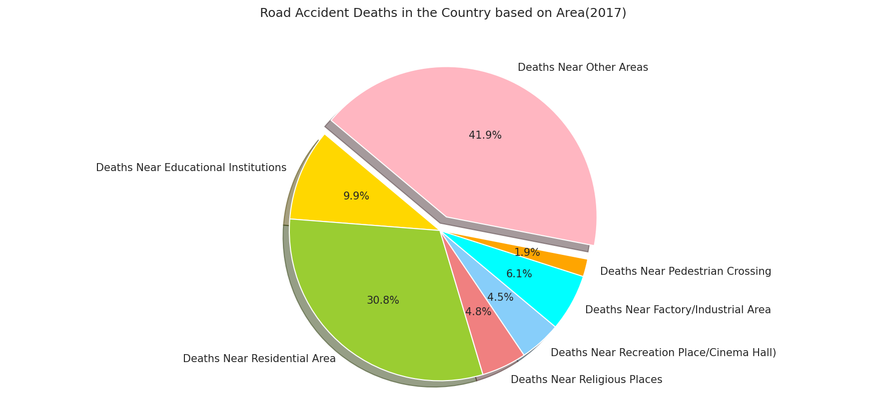
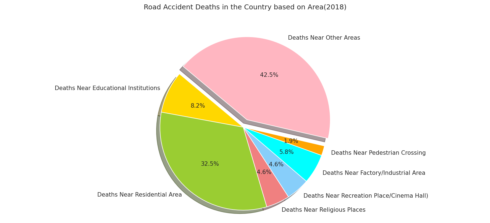
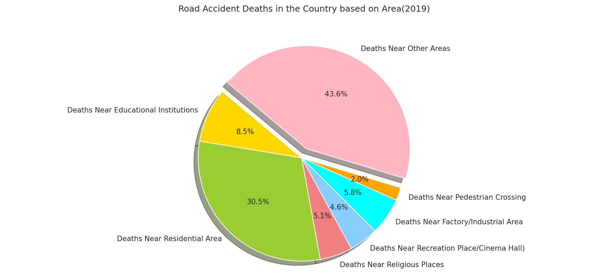
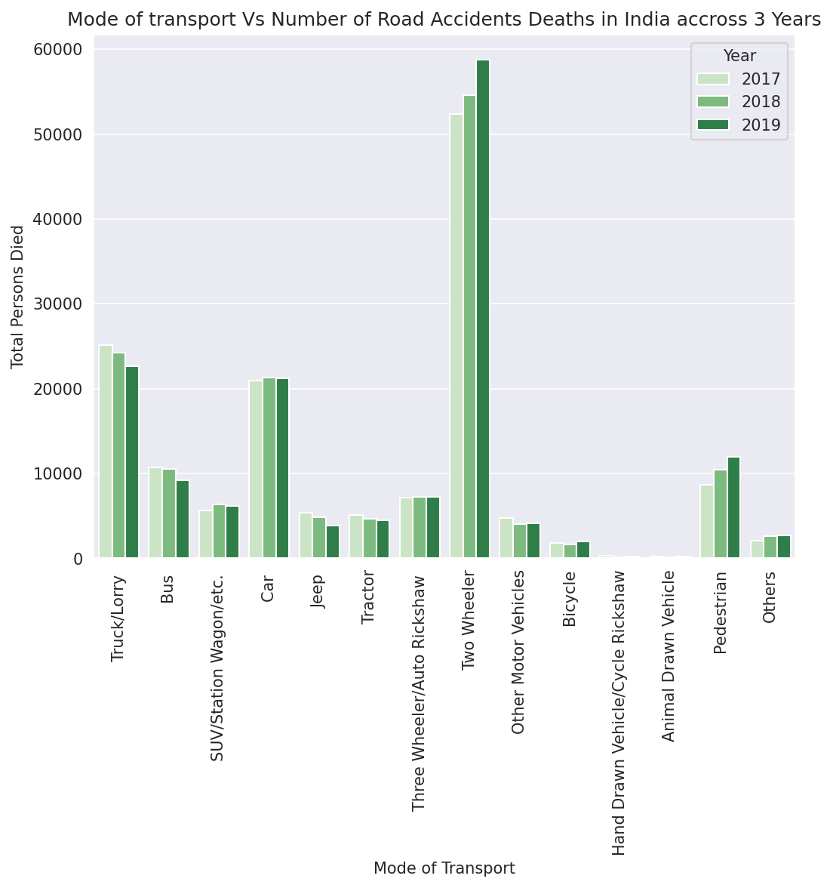
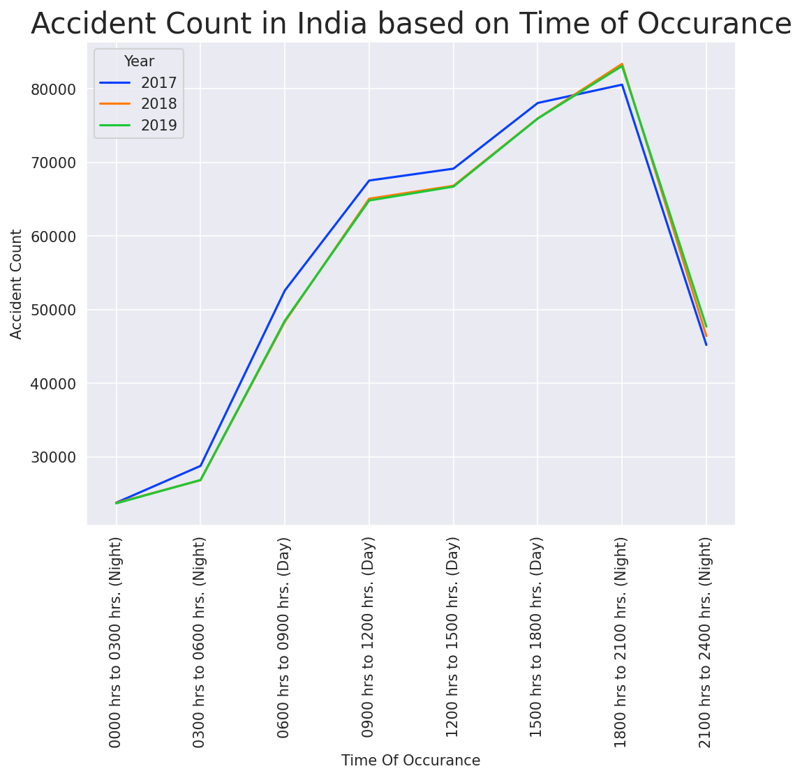
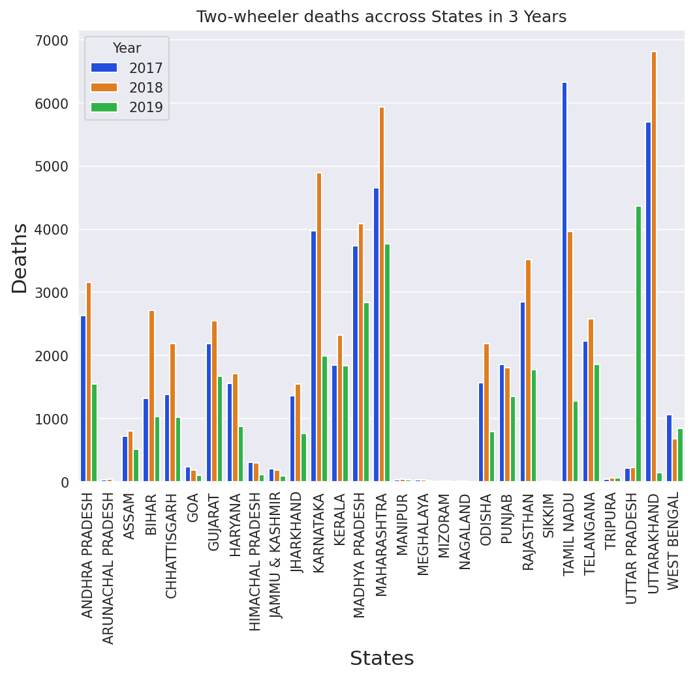

Home page

Accidents

In this code, the fas class specifies that we're using a "solid" style
icon, and the fa-thumbs-up class specifies which specific icon to use.
You can find a full list of available icons and their class names on the
FontAwesome website.







